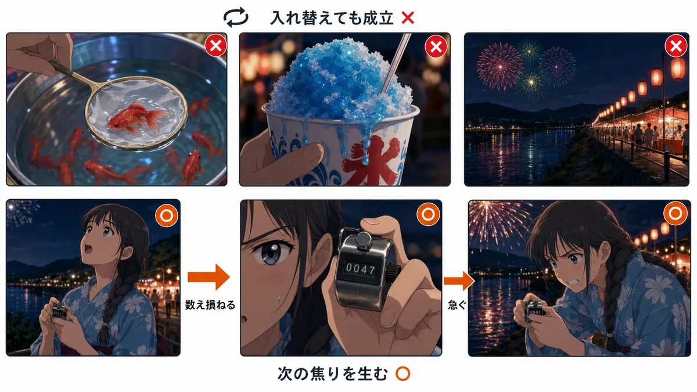
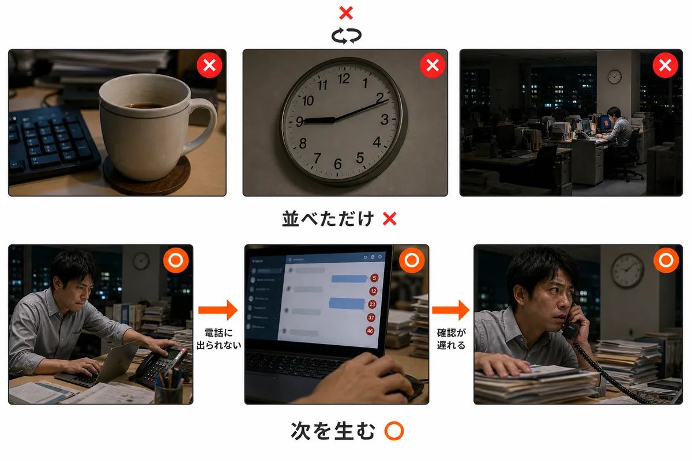

#12学習専用構成とシーン設計✓ 覚えた
ビートは、構成表の一行
いいカットは撮れたのに全体が繋がらない…ってとき。カットから考え始めているのが原因かもしれません。
先に構成表の一行 (役割+伝えること+尺) を並べる — 画はまだ決めない
ビートとは構成表の一行のこと (例: 「1. つかみ / 商品を印象的に見せる / 3秒」)。役割と伝えることと尺だけを持ち、画はまだ決まっていない。 同じ「課題を提示する」ビートでも、物語で展開 (山積みの書類→時計→ため息)、データで展開 (グラフ→手元)、羅列で展開 (書類・電話・深夜) と絵の作り方は自由 — 伝える意味は同じ。 ビート=意味の単位 (何を伝えるか) / シーン=場所と時間の単位 (どこで・いつ)。だからモンタージュにシーンはなくてもビートはある。
★AI生成ではAI生成はいきなりカットから考えがち — カットから積むと全体が繋がらない。ビート表が並んだ時点で構成は完成、あとは各ビートを絵にするだけ。
☑ カットを書き出す前に、構成表の一行×nを並べたか
出典: 連載 ・ 深掘り: kc_カット割りと空間文法
#06学習専用カットを繋ぐ✓ 覚えた
同じ被写体は、30度以上動かして繋ぐ
カットが繋がってない感じがする…ってとき。サイズか角度の変化が足りないのかもしれません。
カメラ位置を30度以上動かす — もしくはサイズを1段階以上変える
バストショットから「ちょっとだけ寄ったバストショット」に繋ぐと気持ち悪い。変化が小さすぎて「新しいカット」と認識されず、脳が同じ画の続きだと思っているところに違う画が来るので、ワープしたように見える。 回避はシンプル: カメラ30度以上 or サイズ1段階以上。どちらかを満たせば別のカットになる。両方やるとさらに安全。ただし180度の線は越えない — 2つでセット。
★AI生成では同じプロンプトで少しだけ画角を変えて生成すると、まさにこの状態を量産する。繋がらないと思ったら、まずカメラを回すか思い切って寄る。
☑ 同一被写体の連続カットは、30度以上かサイズ1段階以上変わっているか
出典: 連載 ・ 深掘り: kc_カット割りと空間文法
#07学習専用カットを繋ぐ✓ 覚えた
イマジナリーラインは越えない
繋いだら人物の向きが変・左右が入れ替わる…ってとき。線を越えているのかもしれません。
カメラは二人を結ぶ線の片側180度の中だけで動かす
向き合う二人を結んだ線がイマジナリーライン (axis of action)。線の片側にいる限りどこへ動かしてもいいが、越えて反対側から撮ると画面の左右が入れ替わり、観客は理屈が分からないまま「なんか変」とだけ感じる。 軸は2種: アクション軸 (走る向きが左→右なら次カットも左→右) と視線軸 (誰が誰を見ているか)。会話では事実上同じ線。日本の現場用語で線越え=ドンデン。
★AI生成ではAI生成はカットごとに空間が作り直されるため、実写より線越えが起きやすい。繋いで向きが変だと思ったら、まず線を疑う。プロンプトで「camera never crosses the axis of action」。
☑ 会話・対峙の連続カットで、左右の位置と視線の向きが保たれているか
出典: 連載 ・ 深掘り: kc_カット割りと空間文法
正典正典カットを繋ぐ✓ 覚えた
線を合法的に越える5法
どうしても反対側から撮りたい…ってとき。黙って越えるから破綻するのかもしれません。
ニュートラル / カッタウェイ / 見せながら越える / 軸の再確立 / J-cut — 手続きを踏めば越えられる
①ニュートラルショット: 線の真上 (正対位置) を1枚挟んで軸をリセット。②カッタウェイ: 小道具・第三者に一旦カットし、その間に軸を再設定したことにする。③見せながら越える: カットせずアーク/ドリーでカメラが線を跨ぐ — 観客が目で追えるので混乱しない。④軸の再確立: 被写体自身が動いたら引きに戻して新しい軸を宣言し直す。⑤プレラップ (J-cut): 台詞を先行させ注意を音に向けて違和感を沈める (Murch)。
★AI生成ではAI生成では③が特に使える — 1本のカメラ移動ショットとして生成すれば線越えがそのまま演出になる。
☑ 線を越えるカットに、5法のどれかの手続きがあるか
出典: 正典 (Murch / 実務調査 2026-08-13) ・ 深掘り: kc_カット割りと空間文法
正典正典カットを繋ぐ✓ 覚えた
カットは動作の途中で割る
カットが編集として目立つ・うるさい…ってとき。静止中に割っているのかもしれません。
cutting on action — 動きが橋渡しになり、カットが知覚されなくなる
ドアに手を伸ばす途中・振り向きの途中で割る。動作が完了して静止してから切ると、カットの継ぎ目そのものが目立つ。 動きの途中で割ると、観客の目は動作の続きを追うのでカットが消える。前のカットの動き出しと次のカットの動き終わりを重ねるのがコツ。
★AI生成では2本の生成クリップを繋ぐとき、両方に同じ動作の「途中」を含ませておくと編集点を隠せる。糊代 (動作の前後) を切り落としすぎない。
☑ 目立つカットは、動作の途中に移動できないか
出典: 正典 (Dmytryk / Murch) ・ 深掘り: kc_カット割りと空間文法
正典正典カットを繋ぐ✓ 覚えた
視線は画面の中で交差させる
会話しているのに噛み合って見えない…ってとき。視線の向きが揃っていないのかもしれません。
eyeline match — 彼女は画面右を見る、彼は画面左を見る。剣がぶつかるように
切り返しの2カットで、互いの視線が画面内で交差する向きに揃っていると「見つめ合っている」ことが伝わる。両方とも同じ向きを見ていると、同じものを並んで見ている別人になる。 Murch は「二人の視線は剣がぶつかるように交差せよ」と言う。イマジナリーラインを守れば自然に揃う — 視線がズレたらまず線越えを疑う。
★AI生成では生成プロンプトに「she looks frame-right, he looks frame-left」と明示する。左右の宣言なしの切り返し生成は五分五分で破綻する。
☑ 切り返しの2カットで、視線が画面内で交差しているか
出典: 正典 (Murch) ・ 深掘り: kc_カット割りと空間文法
#09学習専用時間を操る✓ 覚えた
カットを割る理由は2つだけ
どこで割ればいいか分からない…ってとき。理由の言えないカットを割っているのかもしれません。
①見せたい画が変わる ②尺を調整したい — 説明できないカットは割らなくていい
①見せたいものを、見せたいタイミングで、見せたいアングルで出すために割る (啜る主人公→麺そのもの)。 ②別のものを挟んでいる間に時間は勝手に進む — ラーメン残り7割→店主の湯切り→食べ終わり。省略した時間は観客が自動補完する (elliptical editing)。映像は実時間を見せる必要がない。
★AI生成では長い動作を丸ごと生成するのは難しい — インサート1枚で飛ばす方が速くてきれい。edit_design.yaml では全カットに cut_reason (new_info/time_adjust) を書く契約。
☑ このカットを割る理由は①②のどちらか言えるか — 言えないなら割らない
出典: 連載 ・ 深掘り: kc_カット割りと空間文法
#14学習専用時間を操る✓ 覚えた
動作は、周りの反応で描写できる
繋いだら急に不自然になった…ってとき。端折ってはいけない動作を飛ばしているかもしれません。
代替描写 — 見せたくない動作は写さず、周りの反応で描く
「ドアが開く→教壇でお辞儀」は、歩く・止まる・向き直るが丸ごと消えているので不自然。かといって歩く7秒は長い。 先生を写さず生徒で描写する: 生徒たちの目線が動く (=歩いている) → 目線が止まる (=立ち止まった) → 「起立ーっ」(=こちらを向いた) → 教壇でお辞儀。先生はドアの後一度も映らないのに、全部伝わる。 構造は時間の圧縮と同じ — 別のものを見せている間に、時間が進む。
★AI生成では破綻しやすい歩行・方向転換・立ち座りの生成を丸ごと回避できる。反応ショットは静的で生成が安定する。
☑ 見せると長い動作を、周りの反応に置き換えられないか
出典: 連載 ・ 深掘り: kc_カット割りと空間文法
#15学習専用時間を操る✓ 覚えた
カラ画を挟んで、アクションをリセットする
尺を詰めたいけど繋がらない…ってとき。カラ画を1枚挟むだけで解決することがあります。
誰もいない画を先に見せ、そこに人物がフレーム・インする
ジャンプカットになるのは、アクションが途中で飛んだのが見えてしまうから。アクションが写っていない画 (誰もいない教壇) を挟めば、飛んだ証拠が画面上に存在しないので違和感が出ない — カラ画でアクションを一度リセットする。 しかも尺の調整に効く: カラ画に靴音だけ響かせて2〜3秒稼ぐと、本来10歩7秒の移動が5歩4秒の体感で成立する。 使い分け: 時間があるなら代替描写、時間がないならフレーム・イン。
★AI生成では人物のいない空間は生成が安定するし、歩行を丸ごと作る必要もなくなる — AI生成では特に実用的。
☑ 繋がらないとき、アクションを写さない画を1枚挟めないか
出典: 連載 ・ 深掘り: kc_カット割りと空間文法
#11学習専用視線と意味✓ 覚えた
シーンとモンタージュは別物
かっこいいのに何も伝わらない…ってとき。物語のつもりでモンタージュを作っているのかもしれません。
判定テスト — カットの順番を入れ替えて成立するなら、それはモンタージュ
シーンは場所と時間が繋がった一連の流れで、束ねるのは因果 (前のカットが原因、次が結果) — 順番を入れ替えると壊れる。モンタージュは連続性を度外視した繋ぎで、束ねるのは主題 (成長・努力・季節) — だいたい入れ替えても成立する。 モンタージュが悪いのではない — 物語を伝えたいのにモンタージュの繋ぎ方をしているのが問題。作る前に「どちらを作るのか」を宣言してから割る。
★AI生成では実測の裏付け: モンタージュは物語ルーブリック25点がほぼ0点 (2/25)。賞・物語狙いなら因果で繋ぐシーンを作る。
☑ これはシーンかモンタージュか、作る前に宣言したか (入れ替えテスト)
出典: 連載 ・ 深掘り: kc_カット割りと空間文法
正典正典視線と意味✓ 覚えた
意味は並置から生まれる (クレショフ効果)
インサートに何を挟めばいいか迷う…ってとき。単カットでなく前後との組み合わせで考えます。
同じ無表情 + スープ皿 = 空腹 / 同じ無表情 + 棺 = 悲しみ — 意味は単一ショットでなく並置が作る
観客は2つのカットの間に自動で関係を読む。俳優の演技が同じでも、隣に置くカットで意味が変わる。 インサート選定は「何を挟むと前後の意味がどう変わるか」で決める — 綺麗なBロールを挟むのではなく、意味を作るカットを挟む。
★AI生成ではAI生成の表情演技が弱くても、並置で感情を作れる — 顔の生成をやり直すより、隣のカットを差し替える方が速い。
☑ このインサートは、前後の意味をどう変えるために挟むのか言えるか
出典: 正典 (Kuleshov / Murch) ・ 深掘り: kc_カット割りと空間文法
正典正典視線と意味✓ 覚えた
重要な台詞は、聞き手の顔で受ける
台詞カットの口の動きが破綻する…ってとき。話し手を写し続ける必要はないかもしれません。
台詞の内容は音声で伝わっている — 聞き手がどう受け止めたかの方が新情報
Dmytryk 曰く「本当に重要なのはリアクション」。重要な告白ほど、話し終わりでなく聞き手の顔で割る。話者の口元より、受け手の目の変化の方が観客の知りたい情報になっている。
★AI生成ではAI生成の最弱点=リップシンクを画面から外せる — 破綻隠しと演出強化が同時に成立する。台詞クリップが崩れたら、再生成の前にリアクションショットへ逃がせないか考える。
☑ この台詞、聞き手の顔で受けた方が強くならないか
出典: 正典 (Dmytryk "The Reaction Is What Really Counts") ・ 深掘り: kc_カット割りと空間文法
正典正典視線と意味✓ 覚えた
破綻の採否は感情から数える (Rule of Six)
生成カットの破綻をどこまで許すか迷う…ってとき。判断の順序が決まっていないのかもしれません。
感情51 > 物語23 > リズム10 > 視線7 > 2D平面5 > 3D空間4 — 下位を犠牲にしても上位を守る
Murch の編集判断の優先順位。数値は本人も半ば冗談の重み付けで、実務で使うのは順序 — 空間の連続性 (最下位) を破っても、感情と物語 (上位) が立つカットを採る。 空間連続性は「気づかれなければゼロ減点」の最下位。逆に、空間が完璧でも感情が死ぬカットは採らない。
★AI生成ではAI生成カットの採否にそのまま使える — 手の破綻 (3D) があっても感情が最高のテイクは、破綻が感情を壊さない限り採用。ただし破綻6分類スキャン (counts/joints等) は採点前に別途通す。
☑ 破綻したテイクの採否を、感情>物語>リズム>視線>2D>3D の順で判断したか
出典: 正典 (Murch "In the Blink of an Eye") ・ 深掘り: kc_カット割りと空間文法
正典正典尺と読速✓ 覚えた
0.20秒/字を割ると、映像が壁紙になる
テロップを読んでたら映像を見てなかった…と言われるとき。読めても観られない速度があります。
0.25秒/字=comfortable / 0.20秒/字が境界 — 未満は「読むか観るか」の二者択一になる
最初の破綻は「読めない」ではなく「動画が観られなくなる」— 文字が注意を勝ち取り、映像が壁紙に落ちる。 行の認識オーバーヘッド0.3秒 + 視線の再取得コスト (位置固定なら0.15秒/行) も乗る。短い行ほど速くできる (3語なら0.8秒で成立)。
★AI生成ではショートはループ再生 (15秒で2-3周見られる) 前提なら1周で全部読ませなくてもよい — 2周目に拾える設計は許される。
☑ テロップの表示秒数 ÷ 文字数が 0.20秒/字を割っていないか
出典: 正典 (放送字幕一般則 / kc_画面内テキストの読速設計) ・ 深掘り: kc_画面内テキストの読速設計
正典正典音で繋ぐ✓ 覚えた
J カットと L カット — 音を先に渡す
カットの切り替えが硬い・ブツ切りに感じる…ってとき。映像と音を同時に切っているのかもしれません。
J = 次のシーンの音を先行させる / L = 前のシーンの音を残す — 音の橋でカットが消える
Jカット (pre-lap): 次の音を4〜20フレーム先行させ、観客の注意を先に次へ運ぶ — 期待とテンポ上昇。Lカット: 前の音を2〜12フレーム残し、感情の余韻を作る。 会話はほぼ全部これで繋がっている。線越えの違和感を沈める用途もある (合法5法の⑤)。
★AI生成では生成クリップの音声は編集で分離し、映像より先/後にずらすだけで実装できる — 生成時に作り込む必要がない。
☑ 映像と音声を同時に切っているカットに、J/L のズレを入れられないか
出典: 正典 (kc_映像編集リズム) ・ 深掘り: kc_映像編集リズム
正典正典音で繋ぐ✓ 覚えた
全拍で切らない — 音ハメはダウンビートだけ
音ハメしたのにストロボみたいで疲れる…ってとき。全部の拍で切っているのかもしれません。
切るのはダウンビートと楽曲のエネルギー変化点だけ — しかも拍の直前16分音符で
全拍カットはストロボ化して離脱を生む。1拍=60/BPM秒を物差しに、4拍ごとに小変化・8/16拍ごとに大変化が目安。 拍ジャストより直前16分音符で切る方が気持ちいい (アンティシペーションカット — 「持ち上がり」で切る)。パターン中断は10-15秒に1回。
★AI生成ではAI素材の尺は動かせないがタイムラインは動かせる — 決定的瞬間を実測して拍に逆算配置し、足りない尺はフリーズで埋める (スロー再生で誤魔化さない)。
☑ カット点はダウンビート+直前16分音符に置いたか — 全拍で切っていないか
出典: 正典 (kc_映像編集リズム 2026-08-13追補 / xc_音ハメと尺合わせ) ・ 深掘り: kc_映像編集リズム
実測実測視線と意味✓ 覚えた
部品を磨いても、物語点は1点も動かない
画も編集も文字も良いのに評価が伸びない…ってとき。磨いている場所が採点対象じゃないのかもしれません。
ルーブリックの物語25点は「人物の信念が変わったか」だけを見る — 画質・編集・タイポでは動かない
自作『ぜんぶ、夏。』をコンテスト用ルーブリックで採点したら、物語軸が **2/25** だった (value_reversal 0 / single_motive 0 / dual_character 0 / pov_discipline 0 / theory_coherence 2)。画・編集・タイポはむしろ強かったのに、物語点は動かなかった。 同時に major 減点が3件自動で立った (価値観不変 / 視点人物不在 / クリシェ3件以上)。つまり**部品の完成度と物語点は別の勘定**で、部品側に時間を足しても25点側は1点も増えない。 直すべきは「主人公の動機を1文で書けるか」「開始の信念 → 終了の信念を書けるか」の2つ。書けないまま作ると、上手い映像のまま0点が確定する。
★AI生成ではAI生成では部品の質が上がりやすいので、この錯覚が特に起きる。生成の前に信念の変化を1行で書いておくと、同じ素材でも点が入る側に倒せる。
☑ 主人公の動機と、開始→終了の信念の変化を1文ずつ書けるか (書けないならそれはモンタージュ)
出典: 実制作の実測 (『ぜんぶ、夏。』master_rubric 採点 2026-07-28) ・ 深掘り: xc_物語とモンタージュ
実測実測視線と意味✓ 覚えた
価値観の反転は、画面内の装置で見せる
変化を描いたのに評価されない…ってとき。ナレーションで言っているだけかもしれません。
反転はナレーションで説明しない — 画面内の「装置の挙動」で見せると加点される
同じ「数を数えることをやめた」という反転でも、ナレーションで言うと value_reversal は 0点のままだった。加点されたのは**装置の挙動**で見せた時 — 数取器のカウントが止まり、やがて手から離れる。 装置は小道具でよい (数取器・ストップウォッチ・スマホの通知・並んだ空き缶)。**変化の前後で同じ装置を写す**のが条件で、装置が変わると別の話に見える。 「言葉で説明できてしまう変化」は画で見せていない、と疑うのが早い。
★AI生成ではAI生成は表情の微差を作りにくいので、装置に語らせる方が確実に伝わる。同じ小道具を参照画像で固定すれば前後の対比も安定する。
☑ 反転が「装置の挙動」で画に写っているか (ナレーションを消しても伝わるか)
出典: 実制作の実測 (『ぜんぶ、夏。』value_reversal 採点 2026-07-28) ・ 深掘り: xc_物語とモンタージュ
実測実測構成とシーン設計✓ 覚えた
中盤は羅列でなく、次の焦りを生む
中盤が弱い・間が持たない…ってとき。カットが並んでいるだけで繋がっていないのかもしれません。
各カットが「次の焦り」を生んでいるか1本ずつ確認する — 羅列は中盤最大の失点源

アニメ: 夏祭り (数取器)

実写: 締切前のオフィス
実測で中盤の最大の失点源は**羅列**だった。夏の風物を順に並べても物語は進まない。直し方は各カットに「これが次の何を生むか」を書くこと。 例: 数え損ねる → 次を急ぐ → また数え損ねる。同じ素材でも、因果で並べ替えるだけで中盤が持つ。 判定は単純で、**隣り合う2カットを入れ替えて成立したら羅列**。成立しないなら因果になっている。
★AI生成ではAI生成は「綺麗な単体カット」を量産するので羅列に倒れやすい。カット表に `causes:` 欄を1列足して、次カットの原因を書けないカットは落とす。
☑ 隣り合う2カットを入れ替えて成立しないか (成立したら羅列なので因果に組み替える)
出典: 実制作の実測 (『ぜんぶ、夏。』中盤の失点分析 2026-07-28) ・ 深掘り: xc_物語とモンタージュ